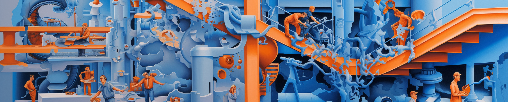

Compétences techniques
JAVA
Développer une solution informatique pour un client.
Proposer des applications informatiques optimisées.
Produire des interfaces utilisateurs selon les besoins clients.
SQL sous postgresql
Mettre à jour et interroger une base de données en requêtes directes.
Concevoir une base de données relationnelle à partir d'un cahier des charges.
Gérer une base de données et ses utilisateurs en tant qu'administrateur.
Langage R
Représenter des données en construisant des graphiques, diagrammes,...
Visualiser, étudier et analyser des données.
Construire des algorithmes et des fonctions mathématiques.
HTML - CSS - javascript
Concevoir des interfaces utilisateurs selon des besoins clients.
Développement d'une vitrine numérique pour la promotion d'une entreprise.
Réalisation de pages web interactives et responsives.
Assembleur
Utiliser le codage binaire et hexadécimal dans des calculs simples.
Utiliser la pile et les pointeurs pour stocker et manipuler des données.
Coder des programmes de bas niveau, itératifs et conditionnels.
Linux (bash)
Utiliser les commandes de bases de bash.
Gérer des processus, des fichiers et des utilisateurs.
Ecrire des scripts pour automatiser des tâches.